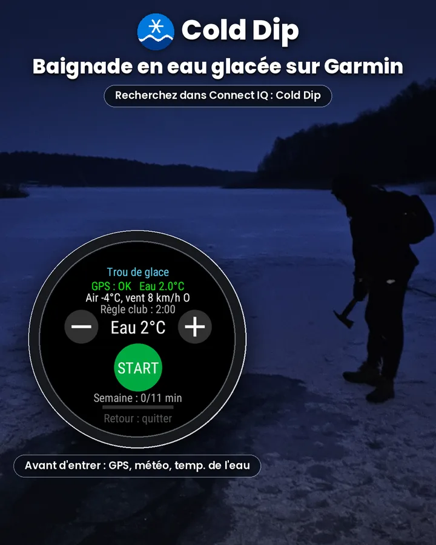
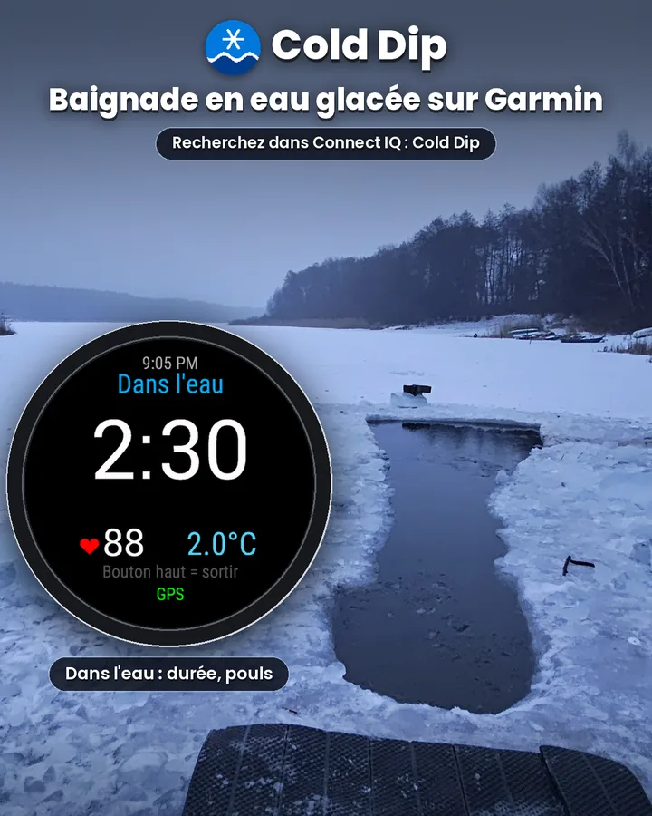
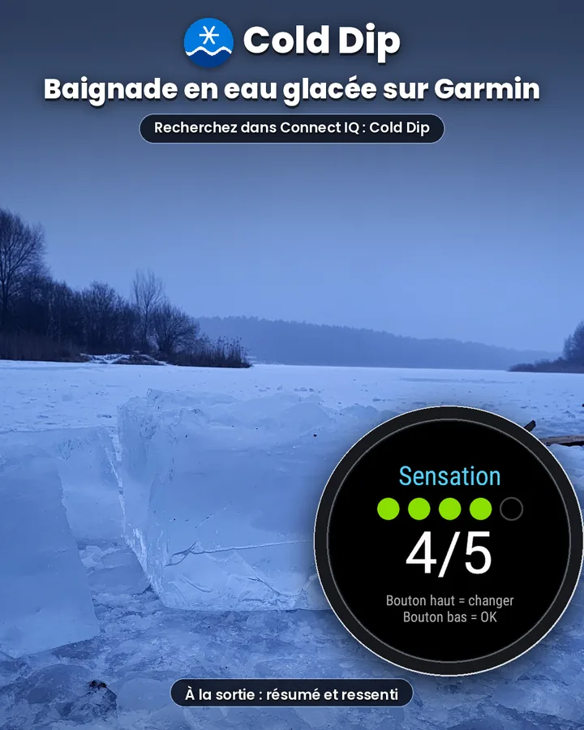

Avant / dans l'eau / après
Le bouton du haut change de phase. Le temps dans l'eau continue simplement de compter — l'app ne te dit jamais de sortir. C'est toi qui décides. Ton dernier temps n'est qu'un point de référence, pas un défi à battre.
Bains froids et baignade hivernale, enregistrés correctement — pas comme une nage.
5.0 dans Connect IQ · 1000+ téléchargements
Ou cherche « Cold Dip » dans l'app Connect IQ sur ton téléphone.



Plateformes
Cold Dip est disponible aujourd'hui sur les montres Garmin. La version Amazfit (Zepp OS) est en cours d'examen dans le Zepp App Store. Les versions pour Huawei, Wear OS et Apple Watch sont en préparation.
Faite pour un bain froid, pas une séance en piscine. Tu restes aux commandes tout le temps.
Le bouton du haut change de phase. Le temps dans l'eau continue simplement de compter — l'app ne te dit jamais de sortir. C'est toi qui décides. Ton dernier temps n'est qu'un point de référence, pas un défi à battre.
La fréquence cardiaque est enregistrée tout du long. La température de l'eau est saisie à la main et enregistrée avec l'activité.
Température de l'air, ressenti et vent — issus de la météo Garmin sur ton téléphone.
Le lieu de ton bain est enregistré et affiché sur une carte dans Garmin Connect.
Après chaque bain, une note rapide de comment tu te sens. Aussi le pic et la récupération de la fréquence, plus Body Battery et stress avant d'entrer.
Tout est enregistré dans Garmin Connect comme une activité à part, pas comme une nage.
Anglais, polonais, allemand, tchèque, slovaque, finnois, norvégien, suédois, espagnol, russe, ukrainien, danois, français, néerlandais, hongrois, italien et lituanien. L'app suit automatiquement la langue de la montre.
Forerunner, Fenix, Epix, Enduro, Venu, Vivoactive, Instinct 2 / 3 / E / Crossover et plus. Non pris en charge : les montres très anciennes comme la Forerunner 920XT (Connect IQ 1.x).
Extras facultatifs pour l'app gratuite — tu ne paies que si tu les veux
L'app que tu utilises déjà reste gratuite. Pro est pour ceux qui veulent un peu plus de la saison : de nouvelles façons de s'entraîner, une vue plus claire de leurs progrès, et un écran plus simple dans l'eau.
$4.99 paiement unique, TVA en sus le cas échéant · essai gratuit de 7 jours
Essaie Pro gratuitement pendant 7 jours — ensuite 4,99 $ Obtiens la mise à jour dans Connect IQ
Fais une séance de sauna avec la montre au poignet, prends une douche froide, suis un contraste guidé de sauna et d'eau, ou fais une courte préparation respiratoire avant d'entrer. Tu confirmes toujours un changement de phase avec le bouton.
Étapes nommées et alertes aux moments que tu choisis, en plus des alertes gratuites à la minute, à mi-parcours et 3-2-1, qui restent telles quelles.
Temps total dans l'eau et au sauna, records de tous les temps et de la saison (eau la plus froide, plus long bain), et historique jusqu'à 200 séances. La liste gratuite montre toujours les 30 dernières.
Tiens une série de 7, 14 ou 30 jours, et gagne des badges pour 10, 25, 50 et 100 séances, un premier bain sous 5°C, une séance de contraste, et un sauna plus un bain d'affilée.
Un grand chronomètre, une page fréquence et rounds, et des thèmes (glace, sombre, fort contraste, sauna). Change de page avec Haut et Bas.
Un énorme chronomètre dans l'eau, température de l'eau et fréquence cardiaque. Un bouton pour démarrer et arrêter. Pas de menus ni d'écrans en plus. Active-le dans les réglages après avoir débloqué Pro.
Un temps suggéré selon la température de l'eau, d'après une règle de club courante (à peu près autant de minutes que l'eau a de °C, entre 0:30 et 5:00). Ce n'est qu'un indice : l'app n'arrête jamais ta séance et n'affirme jamais qu'un temps est sûr.
Sur les montres plus récentes tu peux épingler un glance et des complications : ta série quotidienne, le temps du dernier bain et les minutes de saison. Le glance est gratuit sur ces montres. Les complications nécessitent un cadran qui prend en charge les complications d'app.
Quand tu enregistres un bain, une carte simple montre le temps, la température, comment tu t'es senti et ta série. Photographie l'écran pour la partager. Une liste d'historique reste sur la montre, et Garmin Connect reçoit toujours l'activité FIT. Il n'y a ni export cloud ni image Instagram — Connect IQ ne peut pas envoyer de photos tout seul.
Après un bain, vois une courbe simple de fréquence, ton pic, et les valeurs de récupération à 1 et 2 minutes. Ce n'est qu'un indice, pas un avis médical.
Enregistre un lieu de bain avec la dernière température de l'eau que tu y as notée. Quand tu es à proximité, l'écran de départ peut afficher cette dernière visite. Ce n'est pas une température du lac en direct — Connect IQ n'a pas d'API de température de l'eau.
Si tu laisses la montre dehors pour qu'elle ne surchauffe pas, active l'option : l'app n'attendra pas de fréquence au poignet dans le sauna, et pourra lancer une phase de réchauffement ensuite. Tu peux aussi lancer le réchauffement après un bain depuis le menu.
| Ce qui est inclus | Gratuit | Pro ⭐ PRO |
|---|---|---|
| Tout ce qui est déjà dans Cold Dip 1.0.3 — quatre profils, historique de 30, respiration guidée, GPS et plus | ✓ Oui | ✓ Oui |
| Sauna, contraste et nouveaux modes ⭐ PRO | — | ✓ Oui |
| Tes propres alertes dans l'eau ⭐ PRO | — | ✓ Oui |
| Vois toute ta saison ⭐ PRO | — | ✓ Oui |
| Records de tous les temps et de la saison — eau la plus froide, plus long bain ⭐ PRO | — | ✓ Oui |
| Badges et séries quotidiennes ⭐ PRO | — | ✓ Oui |
| Écrans en plus et thèmes de couleurs ⭐ PRO | — | ✓ Oui |
| Mode simple, conçu pour les gants ⭐ PRO | — | ✓ Oui |
| Un indice de durée — pas une limite ⭐ PRO | — | ✓ Oui |
| Complications Glance et cadran (montres plus récentes) | Sur les montres plus récentes | Sur les montres plus récentes |
| Carte de séance et liste d'historique ⭐ PRO | — | ✓ Oui |
| Graphique de fréquence et de récupération ⭐ PRO | — | ✓ Oui |
| Lieux enregistrés avec la dernière température de l'eau ⭐ PRO | — | ✓ Oui |
| Montre hors du sauna et réchauffement ⭐ PRO | — | ✓ Oui |
| Prix | Gratuit | Essai de 7 jours, puis 4,99 $ une fois |
Pro fonctionne sur les montres Garmin plus récentes avec Connect IQ 4 ou plus, notamment Venu 2 / 3 / 4, Venu Sq 2, Venu X1, vívoactive 5 / 6, Forerunner 165 / 170 / 255 / 265 / 570 / 955 / 965 / 970, fēnix 7 / 8 / 9, epix (Gen 2), Instinct 3 AMOLED, Descent Mk3, Enduro 3 / 4, Approach S50 / S70 / S72 et MARQ (Gen 2) / (Gen 3). Il ne fonctionne pas sur les modèles plus anciens ou à mémoire plus limitée comme fēnix 5 / 6, la première Venu, vívoactive 3 / 4, Forerunner 55 / 245 / 645 / 945, Instinct 2, Instinct 3 Solar ou Instinct E — l'app gratuite y fonctionne toujours. Vérifie ton modèle dans la liste.
Dans Garmin Connect, une séance de sauna est enregistrée comme entraînement ou méditation, car Garmin n'a pas de type d'activité « sauna ».
L'indice de durée n'est pas un avis médical et ne signifie pas qu'une séance est sûre. L'eau froide et le sauna comportent des risques. Consulte un médecin, n'y va jamais seul, et use de ton jugement. Tu restes aux commandes tout le temps.
Cherche ton modèle. La liste correspond aux 133 montres de Cold Dip.
Les très anciennes montres Connect IQ 1.x, comme la Forerunner 920XT, ne peuvent pas être prises en charge. Pro nécessite une montre plus récente — cherche ton modèle pour voir s'il est inclus.
Cadrans
Cadrans pour la baignade hivernale, y compris des cadrans de saison que tu gagnes avec des bains dans Cold Dip. Mors – tarcza change avec la météo. Mors Level grandit avec tes minutes de saison. Dip Goals et Afterdrop arrivent bientôt.
Saison 2026/2027
Ils sont gratuits — tu ne peux pas les acheter. Tu les débloques uniquement avec des bains dans l'app gratuite Cold Dip.
15 bains dans une saison. Code MK.
50 bains dans une saison. Code MZ. Choisis Król ou Posejdon.
Sans le rang, le cadran n'affiche que l'heure et la date. Le code ne fonctionne que sur ta montre.
Comment débloquer


Cadran animé au morse pour baigneurs d'eau froide
$3.99 Essai gratuit de 24 heures
Bientôt dans le Connect IQ Store Obtiens-le dans Connect IQ Voir plus
Cadran ludique au morse pour les bains froids
$2.99 Essai gratuit de 7 jours
Bientôt dans le Connect IQ Store Obtiens-le dans Connect IQ Voir plus

Anneaux d'objectif pour les bains de la semaine, les minutes de saison et ta série, plus température de l'eau et de l'air, Body Battery et fréquence cardiaque. Quatre thèmes.

Un cadran Garmin gratuit avec une grande heure et 3 champs de données. Il ne se verrouille jamais. Afterdrop Pro, facultatif, débloque les champs Cold Dip, la température de l'air, le lever et le coucher du soleil, et 4 thèmes en plus.
Cadran animé au morse pour baigneurs d'eau froide
Le morse réagit à la météo : des vagues par beau temps, il met un bonnet par le gel, secoue la neige et saute dans le trou de glace quand c'est l'heure du bain. Heure, date, température de l'air, météo, fréquence cardiaque, pas et batterie. L'animation se joue quand tu réveilles la montre — jamais en mode always-on.
$3.99 paiement unique, TVA en sus le cas échéant
Sur les montres AMOLED, le morse bouge quand tu lèves le poignet — jamais en mode always-on.
Animation en couleurs sur les montres AMOLED comme Venu 2, 2 Plus, 3 et 4, vívoactive 5 et 6, Forerunner 165, 170, 265, 570, 965 et 970, Fenix 8 et 9 (AMOLED), Epix 2, Descent Mk3, D2 Mach, Approach S70 et S72, Instinct 3 AMOLED et MARQ 2 et 3.
Ce cadran n'est pas disponible sur les montres MIP ou à mémoire plus limitée comme Fenix 5 Plus, Fenix 6 et 7, Fenix Solar, Forerunner 245, 255, 745, 945 et 955, Enduro, Descent Mk2, vívoactive 4, Venu 1 et MARQ de première génération. Ces écrans ne peuvent pas afficher l'animation en couleurs.
Cadran ludique au morse pour les bains froids
Ton morse compagnon monte de niveau sur 5 étapes à mesure que tes minutes de bain de la saison augmentent — synchronisé en direct depuis l'app gratuite Cold Dip. Un trou de glace fumant en hiver, une plage en été, un badge de série de jours, la température de l'eau, la fréquence cardiaque, la batterie et un affichage always-on épuré. L'animation au réveil se joue quand tu réveilles la montre — jamais en mode always-on.
$2.99 paiement unique, TVA en sus le cas échéant · essai gratuit de 7 jours
Pour monter de niveau avec les minutes en direct, la série et la température de l'eau, installe la Cold Dip app gratuite. Sans elle, ces champs affichent simplement les données de la montre.
NOVICE 1/5


5 levels
1/5
0–29 min cette saison
2/5
30–119 min cette saison
3/5
120–299 min cette saison
4/5
300–599 min cette saison
5/5
600+ min cette saison


Animation en couleurs sur 51 montres AMOLED comme Venu 2, 2 Plus, 3 et 4, vívoactive 5 et 6, Forerunner 165, 170, 265, 570, 965 et 970, Fenix 8 et 9 (AMOLED), Epix 2, Descent Mk3, D2 Mach, Approach S70 et S72, Instinct 3 AMOLED et MARQ 2 et 3. L'affichage always-on n'allume que très peu de pixels.
Un cadran clair et statique sur 19 montres MIP comme Fenix 7, Fenix 8 Solar, Forerunner 255 et 955, et Enduro 3 et 4. Au total, Mors Level prend en charge 70 montres Garmin, en 11 langues.
Note moyenne 5,0 ★ dans le Connect IQ Store et 1000+ téléchargements.
★★★★★
„Super, pierwsze morsowanie z apką za mną, działa! Tego mi było trzeba! Dzięki”
Super, mon premier bain avec l'app est fait, ça marche ! Juste ce qu'il me fallait ! Merci (Traduit du polonais)
★★★★★
„Rewelacyjna apka. Przetestowana podczas morsowania. Wszystko działa dobrze”
Application géniale. Testée pendant un bain hivernal. Tout fonctionne bien (Traduit du polonais)
★★★★★
„Działa nawet na starszym Garminie za co duże brawa dla autora”
Fonctionne même sur une Garmin plus ancienne — un grand bravo à l'auteur (Traduit du polonais)
★★★★★
„Świetna sprawa!💙”
Super truc !💙 (Traduit du polonais)
Un bain du départ à l'enregistrement — de vrais écrans du simulateur Garmin.


Versions récentes de Cold Dip.
Les rangs sont gratuits et juste pour le plaisir — personne ne rivalise avec personne : Manchot (1), Phoque (5, 7 jours de Pro gratuits), Morse guerilla (15, un code pour le cadran Mors Komandos 2026/2027), Morse vétéran (30, −30 % sur Mors Level / Dip Goals, codes bientôt) et Morse légende (50, un code pour un cadran or au choix : Mors Legenda Król 2026/2027 ou Mors Legenda Posejdon 2026/2027). Au plus un bain par jour compte (saison du 1er octobre au 30 avril), et une séance uniquement au sauna ne compte pas. Ce sont trois cadrans de saison distincts, bientôt dans le Connect IQ Store, gratuits à installer : gagne-les avec un rang dans Cold Dip. Ils ne sont pas dans les lots à 5,99 / 7,99 $, et de nouveaux cadrans arrivent chaque saison.
Tous les records — eau la plus froide et plus long bain, de tous les temps et cette saison — font maintenant partie de Pro. Ils sont toujours enregistrés pour tout le monde, et l'app gratuite affiche « Nouveau record ! Voir dans Pro ». Une demande unique d'évaluation apparaît après ton troisième bain. Le chronométrage, la fréquence cardiaque et l'enregistrement dans Garmin Connect restent gratuits. Sur les montres plus anciennes et monochromes sans Pro, les records restent gratuits.
La température de l'eau peut maintenant être réglée sous 0°C.
La température de l'eau saisie après la sortie s'applique désormais uniquement à cette séance. L'invite ignore un appui accidentel juste après la sortie. Plus robuste : une mémoire pleine ou une erreur d'enregistrement ne fige plus l'app, et un champ ou un sport non pris en charge sur une montre plus ancienne n'empêche plus le démarrage. Conseils de réchauffement polonais et russes corrigés.
Correction d'un plantage environ 20 secondes après l'enregistrement d'une séance (signalé sur Venu 3S). Après être sorti, la montre demande la température de l'eau ; c'est gratuit et on peut le désactiver dans les réglages.
Cold Dip Pro est là. Tout ce qui vient de 1.0.3 reste gratuit. Pro est facultatif : un déblocage unique à 4,99 $, avec un essai gratuit de 7 jours. Nouveaux modes : sauna, douche froide, contraste guidé et préparation respiratoire ; alertes perso et étapes nommées dans l'eau ; statistiques de saison, badges et séries quotidiennes (7 / 14 / 30) ; écrans en plus, thèmes de couleurs et mode simple.
133 montres, dont Instinct 2, Instinct 2S, Instinct 2X, Instinct 3 Solar, Instinct E et Instinct Crossover, plus une nouvelle disposition noir et blanc pour les écrans MIP.
126 montres, dont la Forerunner 55.
105 montres, dont des dispositions rectangulaires pour Venu X1 et Venu Sq 2.
Première version.
“Działa idealnie” (Fonctionne parfaitement)
Un bain de plus de 10 minutes à 5°C — température de l'eau sur la montre, et toutes les données enregistrées dans Garmin Connect.
Quelques questions que les gens posent souvent après l'installation.
Installe-la depuis l'app Connect IQ Store sur le téléphone — pas depuis Google Play ni l'App Store. Sur la montre, tu trouveras Cold Dip dans la liste des activités / apps.
Dans le profil « Trou de glace », utilise les boutons − / + sur l'écran de départ. Dans les autres profils, règle-la depuis le menu : « Temp. de l'eau manuelle ». Si tu vois « --°C » dans l'eau, la température n'a pas encore été définie.
Ouvre l'activité, va dans l'onglet Statistiques et descends jusqu'à la section « Connect IQ ». La fréquence cardiaque, la température de l'eau, la météo, comment tu t'es senti et les temps des phases sont tous là. Les tuiles de l'écran d'aperçu sont définies par Garmin — l'app ne peut pas les changer.
Non. La montre ne peut pas mesurer la température corporelle. Le capteur lit la température de la montre elle-même, influencée par ta peau et l'air. Dans Cold Dip, la température de l'eau est saisie à la main.
Les calories sont estimées par la montre à partir de la fréquence cardiaque, pas calculées par Cold Dip.
Oui. L'enregistrement tourne sur la montre, donc le téléphone peut rester dans le sac. Sans le téléphone tu perds seulement la météo, car elle vient de la météo Garmin sur le téléphone. L'activité se synchronise avec Garmin Connect la prochaine fois que la montre se connecte au téléphone. Il te faut le téléphone pour installer l'app et pour débloquer Pro.
La montre ne peut pas mesurer la température de l'eau toute seule — son capteur intégré lit la montre, réchauffée par ta peau et l'air. Dans Cold Dip tu règles la température de l'eau avec − / + (ou dans le menu), et après être sorti, l'app te la demande. Si tu as un capteur Garmin Tempe apparié, l'app utilise sa mesure. Le capteur de la montre et la température de l'air ne sont jamais présentés comme température de l'eau.
Pro est facultatif et l'app reste gratuite. Pro ajoute sauna, douche froide, contraste guidé et préparation respiratoire, alertes perso, statistiques de saison, records de tous les temps et de la saison (eau la plus froide, plus long bain), badges et séries quotidiennes, écrans en plus et thèmes, un mode simple pensé pour les gants, un indice de durée selon la température de l'eau (un indice, jamais une limite) et un graphique de fréquence. Cela coûte 4,99 $ une fois après un essai gratuit de 7 jours. Voir toutes les fonctions Pro.
Les paiements passent par KiezelPay. Quand tu veux garder Pro, la montre affiche un code à 6 chiffres. Saisis-le sur kzl.io/cold-dip-pro (pour les cadrans payants : kzl.io/code) et paie une fois. Garde le téléphone à proximité, avec Garmin Connect et le Bluetooth allumés — la montre se débloque via cette connexion, généralement en 5 minutes.
Plus de 130 montres Garmin avec Connect IQ : Forerunner, fēnix, epix, Enduro, Venu, vívoactive, Instinct 2 / 3 / E / Crossover et plus. Pro nécessite Connect IQ 4 ou plus récent. Les très anciens modèles comme la Forerunner 920XT ne sont pas pris en charge. Vérifie ton modèle.
Une version pour Amazfit (Zepp OS) est prête et en attente d'examen dans le Zepp App Store. Les versions pour Huawei, Wear OS (Samsung Galaxy Watch, Pixel Watch) et Apple Watch sont en préparation — pas encore de dates. Être prévenu.
L'eau froide est sérieuse. Ce sont des rappels de sécurité généraux, pas un avis médical. C'est toi qui décides quand entrer et quand sortir.
Vas-y toujours avec quelqu'un qui peut t'aider en cas de problème, ou assure-toi que quelqu'un sur la rive te surveille.
Si tu débutes dans l'eau froide, habitue-toi progressivement plutôt que de commencer par un long bain dans une eau très froide.
Beaucoup de gens commencent par un temps court dans l'eau et progressent lentement. Il n'y a pas de temps que tu “dois” tenir.
Quitte l'eau dès que tu sens que tu le dois — de forts tremblements, une douleur, un engourdissement, de la confusion, ou simplement le sentiment que c'est assez. Cold Dip ne te dit jamais de sortir et ne fixe jamais un temps à battre. Ton dernier temps n'est qu'une référence.
Sèche-toi et réchauffe-toi dès que possible après être sorti. Prépare des vêtements chauds avant d'entrer.
Une fois sorti, ta température centrale peut continuer à baisser un moment, le sang plus froid revenant de la peau et des membres. On l'appelle souvent afterdrop. Continue de te réchauffer, prends ton temps, et attends de te sentir bien avant de conduire ou de pédaler.
Cold Dip est une app d'enregistrement, pas un dispositif médical, et elle ne donne pas d'avis médical. Elle ne peut pas te dire s'il est sûr pour toi d'entrer dans l'eau froide. En cas de problème de santé, de grossesse ou de doute, parle d'abord à un professionnel qualifié.
Des lectures courtes et pratiques d'un baigneur d'eau froide. Conseils généraux, pas un avis médical.
Une règle empirique populaire des clubs selon la température de l'eau — et pourquoi ce n'est pas une limite sûre.
Pourquoi tu peux avoir plus froid après être sorti, et comment te réchauffer calmement.
Premiers bains pas à pas : de la compagnie, des temps courts, des vêtements chauds prêts.
Un court aperçu d'un bain, de l'écran de départ à l'enregistrement dans Garmin Connect.
Cold Dip arrive sur d'autres montres. Laisse ton e-mail et choisis ta montre — je t'écrirai une fois, quand cette version sera prête.
Je ne garde ton adresse que pour t'envoyer ce seul message. Pas de newsletter. Écris-moi et je la supprimerai. Tu préfères un e-mail simple ? lukasz.pszenny@gmail.com
Tu animes un groupe, un club ou une page de baignade hivernale ? N'hésite pas à partager Cold Dip avec tes membres. C'est gratuit, et les visuels et le texte ci-dessous sont prêts à publier.
Écris-moi et ton club recevra son propre code de réduction Pro pour tes membres.
Pour le vestiaire, le sauna ou le panneau du club. Le code QR mène à ce site.
Un cadran Garmin avec le logo de ton club, réalisé sur demande. Dis-moi ce que tu as en tête.
Tu as une idée pour une app ou un cadran Garmin ? Écris-moi et dis-moi quelle montre tu utilises.
Si tu utilises déjà Cold Dip, un avis dans Connect IQ aide beaucoup — merci !
Cold Dip est gratuite. Si elle t'aide pour tes bains, tu peux soutenir le travail derrière.
Offre-moi un café